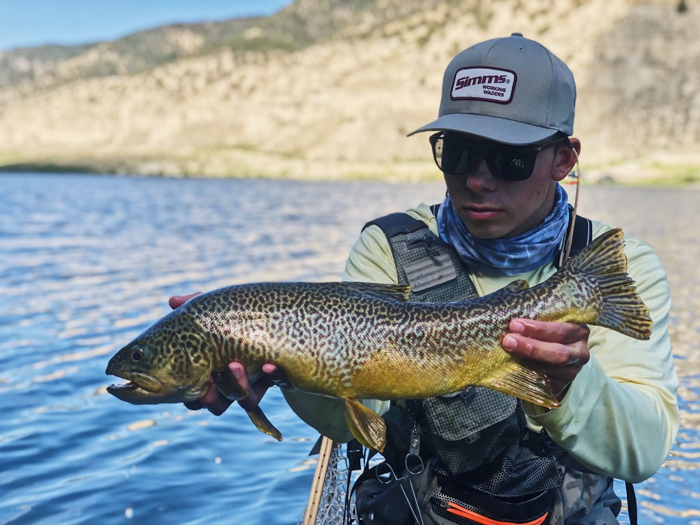

Fall Fishing Opportunities
11.15.22 Report - Northern Utah
As temperatures start to drop, tiger trout in high mountain lakes are looking for bigger meals. Consider using medium to large size streamers in black, green, or red to intice an eat. Peform slow retrieves with hard twitches every few seconds for best results.